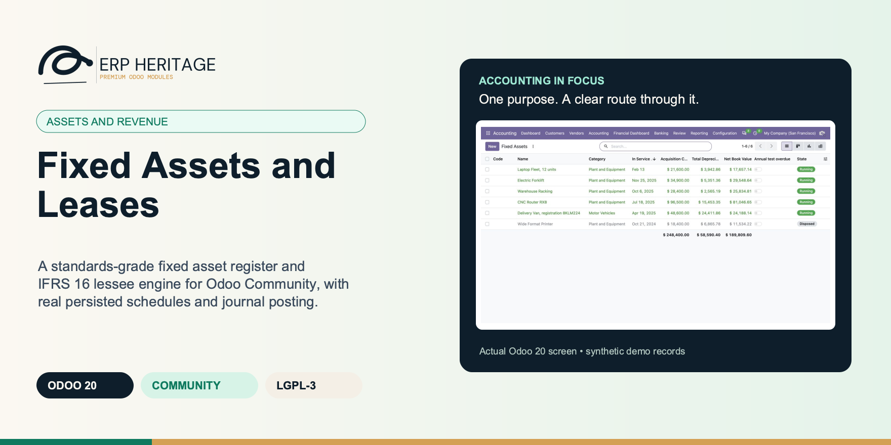
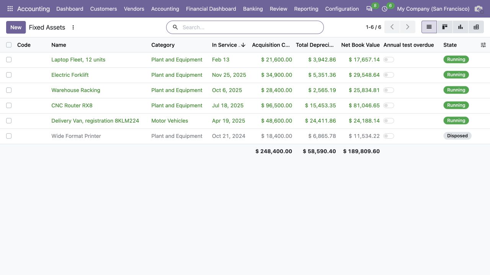
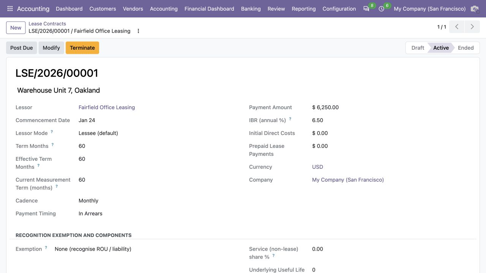
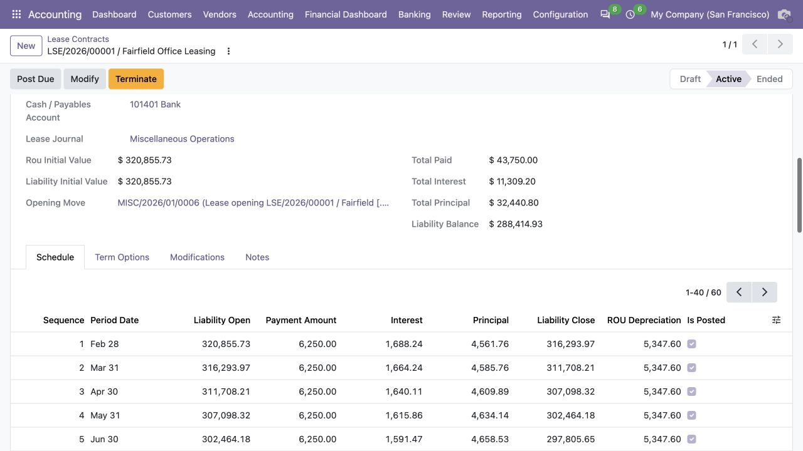

ERP HERITAGE / ODOO 20 COMMUNITY
Fixed Assets and Leases
A standards-grade fixed asset register and IFRS 16 lessee engine for Odoo Community, with real persisted schedules and journal posting.
LGPL-3 · Odoo 20 · v20.0.1.5.9 · Module guide, setup, workflows and rollout checks
The purpose
Make the next finance decision clearer.
A first class fixed asset register and IFRS 16 lessee accounting engine for Odoo 20 Community. No paid Enterprise modules required. Every schedule is a real persisted record, one line per period with computed depreciation, accumulated balance and net book value, queryable and exportable for audit.
Inside Odoo 20
See the accounting workflow.
Captured from Odoo 20 Community using synthetic demonstration records. Configuration screens show the available workflow; external service connectivity still requires the relevant provider setup and validation.

Asset register with running and disposed assets, accumulated depreciation and net book values.
Captured 2026-09-22 from isolated Odoo 20 Community database with synthetic demonstration records. No external submission or live banking activity is represented.

Running forklift asset with acquisition cost, useful life, depreciation method and next posting date.
Captured 2026-09-22 from isolated Odoo 20 Community database with synthetic demonstration records. No external submission or live banking activity is represented.

Active IFRS 16 lease with payment cadence, term and incremental borrowing rate.
Captured 2026-09-22 from isolated Odoo 20 Community database with synthetic demonstration records. No external submission or live banking activity is represented.

Lease schedule separates principal, interest and right-of-use depreciation, with posted periods marked.
Captured 2026-09-22 from isolated Odoo 20 Community database with synthetic demonstration records. No external submission or live banking activity is represented.
Inside this module
Built around the work your team does.
The hard parts, done right
IFRS 16 leases with present value measurement, modification remeasurement at the revised rate, and a schedule where principal plus interest always equals the payment. IAS 36 impairment with a dual reversal ceiling and automatic re-amortisation. Not field names that sound like standards, the actual mechanisms in shipped, tested code.
Every period is a record
Depreciation, lease and deferral schedules are real persisted lines, one per period with computed charge, accumulated balance and net book value. Queryable, exportable and audit ready. A last row true-up lands every closing balance exactly on target despite fixed per period rounding.
Yours to keep
LGPL-3 source on disk. No activation key, no phone-home, no recurring licence, and no paid Enterprise dependency. Read it, extend it, fork it if you need to. Free today and free at renewal, because there is no renewal.
AUC . CIP
An asset under construction accumulates cost with no schedule. When you capitalise it, a balanced asset to holding transfer entry posts, the in service date is set, the schedule is generated and depreciation begins, all in one action.
AU . INSTANT WRITE-OFF
Instant asset write-off books a one shot full depreciable amount write-off in the first period regardless of useful life, salvage still honoured, for instant asset write-off and fast deduction regimes.
DEPRECIATION
Reducing balance and diminishing value automatically switch to straight line on the remaining balance once that exceeds the declining amount, so the asset reaches salvage exactly at end of life rather than drifting above or below it.
IMPAIRMENT . IAS 36
Losses on revalued assets debit the attributable reserve before P&L, and CGU allocation respects every member's IAS 36.105 floor.
PROSPECTIVE SCHEDULES
After impairment or revaluation, future charges retain the selected straight-line or reducing-balance method and true up exactly to salvage.
From input to outcome
Follow the complete workflow.
Prepare the business inputs
Prepare the asset, lease or deferral with its governing dates and accounting choices, checking a sample schedule against the contract. Gather asset costs, useful lives, methods, lease terms, payment schedules, accounts and effective dates. Use a representative case with a known expected result so the team can separate configuration decisions from unexpected behaviour. Keep the supporting commercial or accounting evidence available during review.
Run the supported operation
Run the relevant depreciation, lease or deferred-recognition actions and review the period records before posting. Follow the record’s available actions in the order intended by the workflow. Review the selected company, relevant dates and any validation messages before continuing. If the source data changes, reassess the result against the updated evidence.
Worked operating scenario
The warehouse lease is renegotiated mid term. The modify wizard accrues the event-date stub, records a scope decrease separately from the revised-rate remeasurement, and rebuilds liability payments at their contractual cadence while ROU consumption remains monthly. On the production line, a machine is impaired under IAS 36. The charge consumes any revaluation reserve before P&L, the remaining schedule is rebuilt using the selected consumption method, and a later reversal is capped at the depreciated historical cost the asset would have had if it had never been impaired. Overnight, the daily cron posts every running asset's due depreciation line, each asset isolated under its own savepoint, so one misconfigured asset never freezes the batch. All of it on Community, with every period sitting on disk as a real line the auditor can trace.
Review the result in context
Inspect the supported revaluation, impairment, modification or disposal path when circumstances change instead of overwriting posted history. Compare the outcome with the expected treatment for this case and record the reason for any difference that requires follow-up. Give exceptions an owner so they do not disappear inside a period-end spreadsheet.
Make the process repeatable
Reconcile the register and schedules to the general ledger and preserve the underlying contracts and valuation evidence outside the calculation alone. Include the accepted operating example, configuration choices and unresolved dependencies in the handover. Review them when business policy, source data or the surrounding Odoo applications change.
Business situations
Where this module fits.
Focused operational adoption
Fixed Assets and Leases is relevant to fixed-asset accountants and lease-accounting teams who need to answer this question: How do long-lived assets, leases and deferred schedules move from initial recognition to their period entries? Start with the process that creates the decision, identify its owner and agree what evidence the reviewer needs. A narrow pilot helps the team evaluate the supported workflow using its own accounting data before broadening access.
A reviewed period-end handover
Use the module’s assets and revenue role as one part of a controlled close. Bring the relevant asset costs, useful lives, methods, lease terms, payment schedules, accounts and effective dates to the review, then explain the result alongside the business event it represents. Establish which outputs become part of the reporting pack and which outstanding matters need a separate accounting decision.
A clear implementation acceptance case
Turn the business question into an acceptance case: How do long-lived assets, leases and deferred schedules move from initial recognition to their period entries? Use one ordinary example and one relevant exception from the supported scope below. Ask the intended operator to prepare it and the reviewer to explain the result. Retain that accepted example with the deployment notes so future changes can be assessed against an understood process.
Before the first result
Prepare a clean, reviewable starting point.
Agree scope before configuration
Confirm that the organisation needs the supported assets and revenue process described here. Identify the responsible fixed-asset accountants and lease-accounting teams and write down the decision they expect the module to support. Use the limitations section to separate shipped behaviour from an integration, professional judgement or operational service that needs another owner.
Bring the required data
Prepare asset costs, useful lives, methods, lease terms, payment schedules, accounts and effective dates. Check the relevant records in the intended company and use dates that match the business event. Resolve missing accounting configuration before evaluating calculated output; plausible-looking totals do not establish that the chosen inputs or policies are correct.
Check the installed foundations
This module declares Accounting Suite Base as part of its installation foundation. Its direct standard-Odoo dependencies are account, mail. Review the actual dependency set in the target database before a rollout, especially where another addon also extends the same accounting models, menus or posting actions.
Set up an owned review routine
Define who operates Fixed Assets and Leases, who reviews unusual results and who maintains configuration. Run the representative workflow below in a test database using the intended users. Confirm that users can reach the work they own and that the reviewer understands the available evidence before moving the process into live operation.
Workflow reference
Understand the records and controls.
Capability detail 1
Asset register. Asset categories carry default useful life, salvage rate, depreciation method and the asset, depreciation expense and accumulated depreciation accounts plus journal. The depreciation engine supports four working methods that generate GL postable schedules: straight line, reducing balance (declining) with an automatic switch to straight line on the remaining balance, AU prime cost, and AU diminishing value, plus a manual schedule. Unsupported units-of-production configuration is no longer offered. First period proration supports none, daily and half-period policies. The schedule reaches salvage exactly at end of life through a last row rounding true-up.
Capability detail 2
Lifecycle and disposal. Draft, running, paused, fully depreciated and disposed states. A posted asset cannot return to draft and a disposed asset cannot reopen. Dispose at a price posts a balanced gain or loss entry, transfers accumulated depreciation and terminates the schedule. Disposing with zero proceeds writes off the remaining book value as a loss.
Capability detail 3
IAS 36 impairment. A loss on a revalued asset consumes its attributable revaluation surplus before P&L. CGU allocation honours each member's IAS 36.105 individual floor. Reversals carry a dual ceiling: cumulative charges and the depreciated historical cost the asset would have had with no impairment. After impairment or revaluation, the remaining schedule is rebuilt prospectively without changing the asset's straight-line or reducing-balance consumption method.
Capability detail 4
IFRS 16 lessee. A lease contract carries lessor, original total term, current measurement term, payment cadence (monthly, quarterly, semi annual, annual), advance or arrears timing, fixed payment, effective annual incremental borrowing rate and optional initial direct costs and prepaid payments. On activation the present value of payments is computed, the ROU asset and lease liability are created and the opening entry posts. Liability payments follow their contractual cadence while ROU consumption is recorded monthly. Modification separates proportional scope-decrease derecognition from subsequent rate/payment remeasurement, and modification or termination accrues earned ROU and interest through the exact event date before derecognition.
Capability detail 5
Deferred revenue and expense. The same schedule engine, exposed through a single Deferred type switch on the record, releases prepaid revenue into income or prepaid expense into the P/L over the schedule, posting a balanced two leg entry each period.
Capability detail 6
Specialised regimes. Asset under construction accumulates cost with no schedule, then a capitalise action posts a balanced transfer entry, sets the in service date and starts depreciation. Instant asset write-off books a one shot full write-off in the first period regardless of useful life, salvage honoured. An IAS 16 parent and child component roll-up and an AU low-value pool with idempotent annual depreciation are included.
Capability detail 7
Operations. Daily crons post due depreciation and lease-amortisation entries only, rotating bounded batches by record id so permanently failing low-id records cannot starve later work. Every asset or lease runs under its own savepoint, so one failure rolls back that record's partial posting without poisoning the batch. A manual Post Due Lines action force posts overdue lines on demand.
LEASES . IFRS 16
Liability cash flows retain their cadence while ROU depreciation posts monthly, including exact event-date accrual before modification or termination.
ROUNDING
Every schedule carries a last row true-up: the final depreciation line absorbs accumulated rounding and the final lease principal row clears the full remaining liability, so accumulated and closing balances land exactly on target despite fixed per period rounding.
AU . LOW-VALUE POOL
Transferring an asset into the low-value pool is blocked when its cost exceeds the pool threshold, and the annual pool depreciation line is idempotent per financial year, so a re-run cannot double charge the pool.
LIFECYCLE
A posted asset cannot be sent back to draft and a disposed asset cannot reopen. Schedule regeneration is draft only and preserves already posted lines, so recomputing parameters never disturbs the ledger.
Asset register with four working methods
Straight line, reducing balance (declining) with an automatic switch to straight line, AU prime cost and AU diminishing value, plus a manual schedule. First-period policy supports none, daily and half-period proration; unsupported units of production is not selectable.
IAS 36 impairment
Revalued assets consume their reserve before P&L, CGU allocation honours each IAS 36.105 member floor, and future depreciation retains the selected consumption method.
IFRS 16 lessee engine
Liability payments follow their contractual cadence while ROU consumption posts monthly. Scope decrease and subsequent remeasurement stay separately measurable, and event-date stubs accrue before modification or termination.
Disposal and gain or loss
Depreciation is accrued to the exact disposal date. Manual proceeds or a posted customer-invoice line can support the sale, leaving the invoice as the sole output-tax source.
Deferred revenue and deferred expense
The same schedule engine releases prepaid revenue into income or prepaid expense into the P/L over the schedule, posting a balanced two leg recognition entry each period via a single Deferred type switch.
Specialised regimes
Asset under construction capitalisation, instant asset write-off, IAS 16 parent and child component roll-up, and an AU low-value pool with idempotent annual depreciation.
Parallel reporting books
Additional tax, IFRS and management books each generate an independent parallel depreciation schedule on the same asset for the tax return or management pack.
Scheduled posting
Daily crons and manager-only Post Due actions book due asset and lease rows with per-record failure isolation.
Automatic Asset
'Create draft asset' leaves the new asset in draft for review; 'Create and validate' also generates the schedule and starts depreciation. Requires an asset category.
Deferred type
Depreciation engine flavour. 'asset' is a regular fixed asset whose net book value declines as accumulated depreciation rises. 'deferred revenue' recognises a pre-paid revenue balance into income over the schedule. 'deferred expense' recognises a pre-paid expense into the P&L over the schedule. The same schedule generator and lifecycle apply; only the journal entry posted on each line differs.
Origin Bill Line
Exact server-owned vendor-bill line that generated this asset. It is paired with the line's Generated Asset field and cannot be supplied or repointed through RPC.
Origin source quarantined
The posted origin bill was reversed. The original and reversal entries are retained, but asset accounting is frozen until an explicit correction workflow resolves the source.
Origin Correction Entry
Posted same-company correction entry supporting the decision to retain an asset after its exact originating bill line was credited. The manager resolution action validates that this entry touches one of the asset's accounting accounts.
Method
Primary depreciation method posted to the GL. Straight Line and Reducing Balance are the standard accounting methods. Prime Cost and Diminishing Value are AU tax-compliant variants (factor 2.0 by default for DV per the post-2006 AU tax ruling). Use additional books for parallel methods (statutory + tax + IFRS).
Instant write-off
When set, the schedule writes off the entire depreciable amount in the first period regardless of useful life. Used by the AU instant-asset-write-off (currently AUD 20,000 threshold for small business; check ATO for the current cap and end date) and similar fast-deduction regimes. Salvage value is honoured.
Under construction
When set, the asset is treated as work in progress. No depreciation schedule is generated and no JE posts. Acquisition cost accumulates on the configured AUC account until action capitalise transfers the balance to the asset account, sets the in-service date, and starts depreciation. Use for projects that capitalise over multiple periods (e.g. a building under construction, software in development).
AUC Holding Account
Balance-sheet account that carries the asset's cost while it is under construction. On capitalisation, the JE debits Asset Account and credits this account.
Prorata mode
Overrides the day-based first-period proration when set. 'none' charges a full first period; 'half' charges half (the mid-period / half-year convention used by some tax regimes); 'daily' prorates by days in service. When blank, the Prorate First Period switch applies.
Asset class
Measurement standard the asset falls under. Tangible assets (property, plant and equipment) follow IAS 16; intangible assets (software, licences, brands, goodwill, capitalised development) follow IAS 38, which adds the indefinite-life regime (no amortisation, mandatory annual impairment testing) and the development-cost capitalisation gate (IAS 38.57).
Indefinite useful life
IAS 38.107-108: an intangible asset with an indefinite useful life is NOT amortised. Instead IAS 36.10 requires an impairment test annually, and whenever there is an indication of impairment. Setting this flag blocks schedule generation and amortisation posting, and places the asset in the annual impairment-test population enforced by the IAS 36 annual-test cron.
Capitalised development cost
Marks an intangible asset arising from development. IAS 38.57 permits capitalisation only when ALL six criteria are demonstrated; until every checklist item below is ticked this asset cannot leave draft. If any criterion cannot be demonstrated, IAS 38 requires the expenditure to be recognised as an EXPENSE when incurred (research and non-qualifying development are never capitalised, IAS 38.54).
Technical feasibility demonstrated
IAS 38.57(a): the technical feasibility of completing the intangible asset so that it will be available for use or sale.
Probable future economic benefits
IAS 38.57(d): how the intangible asset will generate probable future economic benefits (existence of a market or, if for internal use, its usefulness).
Adequate resources available
IAS 38.57(e): the availability of adequate technical, financial and other resources to complete the development and to use or sell the intangible asset.
Annual test overdue
Set by the IAS 36 annual-test cron when this goodwill or indefinite-life intangible asset has no impairment test evidence (a CGU test run, or a posted impairment event) dated inside the current fiscal year once the company's annual test month has been reached. Cleared automatically when a test posts. Surfaces the IAS 36.10 exception list in the asset list and filters.
Latest recoverable amount
Most recent recoverable-amount measurement linked to this asset: stamped by a CGU impairment test (the member's post-test carrying amount when the unit was written down to its recoverable amount) or by a hand-keyed impairment or reversal that states its recoverable amount. IAS 36 does not permit a revaluation uplift to carry the asset above its recoverable amount, so the revaluation wizard caps uplifts against this measurement.
Revaluation Reserve Account
Equity reserve attributable to this asset. Revaluation and impairment workflows use it to route IAS 16/IAS 36 amounts through OCI before P&L where required.
Books
Parallel depreciation books on this asset (tax, IFRS, management). Each book has independent method, useful life, salvage, and schedule. They are reporting-only; the primary asset schedule is the sole GL source of truth.
Parent Asset
Parent asset this record is a component of. IAS 16 requires entities to depreciate significant components of an asset separately when their useful life or depreciation pattern differs from the parent (e.g. an aircraft engine vs the airframe, an HVAC system vs the building). The parent rolls up component NBV in display but each component carries its own schedule and posts its own depreciation.
Accumulated impairment
Net total of impairment charges minus reversals on this asset. Reduces the carrying amount used for the NBV computation; cannot exceed the depreciable base.
Cash-Generating Unit
Optional cash-generating unit (CGU) this asset belongs to. IAS 36 tests recoverable amount at the level of the smallest group of assets that generates largely independent cash inflows when an individual asset cannot be tested on its own. When the CGU's impairment test recognises a loss, the shortfall is allocated pro-rata across the CGU's member assets (any goodwill first). Left blank the asset is tested and impaired individually as before; this grouping is opt-in.
IAS 36.105 Individual Floor
Lowest carrying amount permitted when a CGU loss is allocated to this asset under IAS 36.105: the highest of its individually determinable fair value less costs of disposal, its individually determinable value in use, and zero. Reassess this input at each CGU test date; zero means no individually determinable floor.
Goodwill
Marks this asset as goodwill allocated to a CGU. IAS 36.104 requires an impairment loss on a CGU to be applied first to reduce the carrying amount of any goodwill, then pro-rata across the other assets of the unit. Off by default; setting it only affects the CGU allocation order.
Low-Value Pool
When set, this asset has been transferred to a low-value pool and is depreciated as part of the pool rather than individually. The asset's own schedule is frozen; the pool's schedule drives all subsequent depreciation. AU sites use this for assets under the AUD 1,000 low-value threshold.
Pool Opening Adjustable Value
Net book value captured at the moment this asset was transferred into its low-value pool (the 'opening adjustable value' that was reclassified into the pool asset account). The pool depreciates and reports on this base, not the gross acquisition cost, so the subledger stays aligned with the GL for an asset transferred in already partly depreciated.
Pool Allocation Date
Date this asset was allocated (transferred) into its low-value pool. Drives the ATO first-year vs subsequent-year rate: the year of allocation attracts the 18.75% first-year rate, later years the 37.5% rate. Recorded independently of the in-service date so an asset transferred in a later year is rated on the correct base year and is not depreciated in the pool before it was ever transferred in.
Revaluation adjustment
Cumulative signed revaluation applied to the carrying amount (positive = uplift, negative = downward revaluation). Held separately from Acquisition cost so historical cost, and the IAS 36.117 depreciated-cost ceiling derived from it, stay intact. Net book value includes this adjustment.
Revaluation surplus
Cumulative revaluation surplus held in equity (the credited revaluation reserve balance attributable to this asset, per IAS 16.39-41). An uplift increases it; a subsequent downward revaluation first reverses it (IAS 16.40) and only the excess hits P&L; on disposal any remaining balance is recycled directly to retained earnings (IAS 16.41), never through P&L. Never negative.
Revaluation pl decrease
Cumulative revaluation decrease previously recognised in P&L (the excess of a downward revaluation that could not be absorbed by the revaluation surplus, per IAS 16.40). A subsequent upward revaluation must first reverse this in P&L (credit to income) up to this balance before any remainder is credited to the revaluation surplus (IAS 16.39). Never negative.
Asset Sale Invoice
Posted customer invoice that recognised the sale proceeds and output tax. The disposal entry clears its selected net revenue line instead of duplicating receivable or tax legs.
Name
Display label for the book, e.g. 'AU Tax Book' or 'IFRS book'. Shown on the asset form and on every schedule line so reports can disambiguate parallel schedules.
Book type
Functional category of the book. Statutory parallel books duplicate the primary book under a different accounting standard. Tax books drive tax-return numbers. IFRS / management books drive secondary reporting. The category is informational; every additional book is reporting-only.
Method
Depreciation method for this book. Prime Cost is the AU tax straight-line over the effective life. Diminishing Value is the AU tax reducing-balance with the 200% factor applied to the prime-cost rate by default.
Useful Life (months)
Effective life used for this book's schedule. Tax-book lives are dictated by ATO ruling TR 2025/1 (and successors); statutory book lives reflect the entity's accounting policy.
Salvage value
Estimated residual value at end of useful life. Salvage for tax-book purposes is typically zero (write down to zero); statutory salvage may be non-zero for assets with expected resale value.
Prorate first period
When set, the first period's depreciation is prorated based on days in service that month. AU tax usually prorates by days held; statutory accounting may use either convention.
Notes
Notes on the book's purpose, regulatory reference, or differences from the primary book. Visible to the tax agent and the auditor.
Prorate first period
If set, the first period is prorated based on days in service. Otherwise the first period charges the full amount.
Legacy test basis quarantined
A pre-upgrade test outcome or impairment exists without the immutable input/member/cash-flow snapshot introduced in 1.5.2. The outcome is retained but is not represented as a new event.
Member Assets
Assets that make up this cash-generating unit. Their carrying amounts are summed to the CGU carrying amount and any impairment loss is allocated across them (goodwill first).
Discount Rate (%)
Pre-tax discount rate applied to the projected cash flows to derive value in use, expressed as a percent per period (e.g. 10 for 10%). IAS 36.55 requires a rate that reflects current market assessments of the time value of money and the risks specific to the asset.
Projected Cash Flows
Projected future net cash inflows attributable to the CGU, one row per period. Discounted at the discount rate to a present value that is the value in use.
Fair value
Fair value of the CGU (an entity input, e.g. a market or appraised value), before deducting the costs of disposal.
Annual test required
Flags a CGU that must be tested for impairment annually irrespective of indicators (IAS 36.10: a CGU to which goodwill has been allocated, or that contains an indefinite-life intangible). Informational; drives review filters and reminders.
Review an asset and a changed lease at close
Illustrative implementation exercise. An asset is first put into service part-way through a period while a warehouse lease is modified later in the year. Review the asset’s method, dates and schedule before posting depreciation. For the lease, inspect the original liability, remaining payment terms and the modification inputs before evaluating the recalculated schedule. Choose one supported exception, such as an impairment reversal or lease termination, and reconcile its journal effect to the register history. Distinguish primary posting schedules from parallel reporting books. Preserve the asset evidence and lease contract with the workpaper so a reviewer can assess the assumptions instead of relying only on a generated schedule.
Questions before rollout
Answers your finance team needs.
Who is this module designed for?
It is designed for fixed-asset accountants and lease-accounting teams. Its central business question is: How do long-lived assets, leases and deferred schedules move from initial recognition to their period entries? The listing describes the shipped operating scope and the decisions that remain with the organisation. Evaluate it against your own records and review process, rather than treating the module name as a promise to cover every scenario in that accounting area.
What should be ready before the first run?
Have asset costs, useful lives, methods, lease terms, payment schedules, accounts and effective dates ready, together with the person who owns the related accounting policy. Prepare the asset, lease or deferral with its governing dates and accounting choices, checking a sample schedule against the contract. A known example makes it possible to check the result and resolve configuration questions before the process is repeated across more records or companies.
What should a reviewer inspect?
Inspect the supported revaluation, impairment, modification or disposal path when circumstances change instead of overwriting posted history. Keep the relevant source evidence with the output and be explicit about company, date and policy choices. The most useful review asks whether the result follows from the business inputs, not only whether the operation completed without a validation message.
How does this fit into the accounting suite?
It belongs to the assets and revenue family. Its declared custom dependency foundation is Accounting Suite Base. Installing the complete suite also brings other operating and specialist modules; using this focused module should be evaluated against its own dependency list and scope. Optional services still need their own configuration and agreement where applicable.
What is the most important scope boundary?
Additional tax, IFRS and management books are reporting only. Each generates a parallel schedule, but only the asset's primary schedule posts to the general ledger. Reconcile the register and schedules to the general ledger and preserve the underlying contracts and valuation evidence outside the calculation alone.
Does installing it validate our accounting policy?
No. Fixed Assets and Leases provides the specific records, calculations or workflow described in this listing. The organisation remains responsible for its source information, accounting choices, supporting evidence and review. Where the process uses an estimate, a contract assessment or an external service, appoint the appropriate owner before relying on the output.
Scope and requirements
Know exactly what you are installing.
Additional tax, IFRS and management books are reporting only. Each generates a parallel schedule, but only the asset's primary schedule posts to the general ledger.
Each asset and lease carries its own currency and rounds every schedule amount to it, but there is no FX coupling inside this module. Foreign currency GL balances are revalued at period end by FX Period End Revaluation only if that module is installed.
Units of production and sum-of-years-digits are not implemented or selectable on the primary register. Use Manual for an externally supported schedule.
There is no dedicated scrap action and no asset modify wizard. Scrap is disposal with zero proceeds, and schedule recomputation on asset parameter change happens by regenerating the draft schedule; the modify wizard applies to leases only.
Accounting-manager approval is required for depreciation, lease, impairment, revaluation and disposal postings.
Standards references describe the accounting subject addressed by the module. They do not establish certification, statutory filing acceptance or suitability for every jurisdiction. Your finance team owns its assumptions, accounting policies and review.
Installation scope
Included dependencies, explained.
Odoo installs the following direct dependencies automatically. Additional dependencies can be brought in by those modules. Related modules in the wider catalogue are optional unless they appear in this dependency chain.
Accounting Suite Base
Shared reporting engine for the ERP Heritage Odoo 20 Community accounting suite, providing a reproducible report-execution audit log and a move-version result cache. Append-only audit log of every report render with user, timestamp, the full options snapshot, runtime, and a SHA-256 result hash for XLSX and PDF output, plus a multi-company analytic-aware parameterised SQL builder with no raw user input in SQL, a three-tier User/Manager/read-only Auditor privilege model, and a currency-aware XLSX writer. Odoo 20 Community accounting reporting engine, reproducible financial report audit trail, move-version report cache invalidation, multi-company parameterised SQL builder, append-only audit log, read-only auditor role, SHA-256 report hash compliance, currency-aware XLSX export, analytic-aware journal item aggregation.
Included dependency: eh_account_base. The shared reporting engine under the ERP Heritage accounting modules: an append-only render audit log, precise per-company cache invalidation, and a whitelist-only parameterised SQL builder.
Account
Odoo Community dependency required by this module. Its own dependencies and configuration remain part of the installation scope.
Odoo Community dependency required by this module. Its own dependencies and configuration remain part of the installation scope.
Acceptance guide
Run a pilot your team can trust.
The following are recommended rollout checks, not claims of additional built-in features. Apply the checks relevant to this module and retain evidence of your own results.
Start with one complete business cycle
Select a recent, closed period that your finance team understands well. Keep its approved source documents, ledger totals and existing working papers available. Reproduce that period in a staging database before working on current transactions. A familiar period makes differences visible: you can distinguish an opening balance problem from a configuration choice, a timing difference or a genuine defect. Agree which person owns each discrepancy and what evidence will close it. Successful installation is the starting point; a repeatable business outcome is the acceptance criterion.
Define the result before choosing settings
Write down the output your team needs from this module: a reviewed transaction, an exported file, a reconciled balance, an approved schedule or an operational queue. Identify who prepares it, who reviews it and who relies on it next. Make the scope concrete with one company, one reporting period and a small representative document set. Include an ordinary case and an exception. This keeps the evaluation focused on the business decision instead of the number of available screens, and gives reviewers a consistent way to compare the new workflow with their current process.
Check the edition and dependency boundary
Use the Odoo 20 edition of the module and its dependencies together. The manifest defines what Odoo installs automatically; a feature mentioned elsewhere in the wider product family is not automatically included. Review the dependency guide on this page before enabling the complete suite, especially where your deployment also uses Sales, Purchase, Inventory or website components. Confirm that your hosting arrangement accepts custom server modules and their Python requirements. Keep a copy of the installed module versions with your acceptance record so a later update can be checked against the same baseline.
Prepare master data with finance owners
Check the companies, currencies, fiscal periods, journals, accounts and partner records used by your sample. Confirm that account purposes agree with your chart of accounts and that archived records are not being selected inadvertently. Review company-specific settings while the intended company is active. Where a workflow needs bank details, analytic dimensions, product information or payment terms, validate those inputs with their owner. Clean master data reduces repeated exceptions and makes it easier to investigate the exceptions that remain. Keep the preparation list short enough for someone else to repeat it.
Keep opening balances traceable
Decide which source establishes the opening position before introducing new transactions. Save the source date, company, currency and supporting reconciliation. If a module maintains a schedule or a working-paper balance alongside the ledger, document how that opening amount should tie to the general ledger. Do not use balancing entries to hide a difference during the pilot. Classify the difference, correct its source and rerun the comparison. The resulting trail is useful both for your internal reviewer and for support if an unexpected calculation needs investigation.
Assign preparation and review deliberately
Choose named users for preparation, review and administration. Confirm their practical access by signing in as those users in staging, rather than relying on an administrator's view of the menus. A visible menu does not replace model access or record restrictions, and a hidden menu does not by itself prove that data is protected. For your own acceptance check, verify the specific business operations each role needs. If your organization requires separation of duties, include that policy in the rollout criteria and check the actual workflow against it before granting production access.
Exercise company boundaries
Run the sample with the intended company selected, then repeat the relevant navigation and search checks as a user assigned to a different company. Record which company owns each source document and each generated result. For users who work across entities, confirm how their allowed-company selection affects totals and available records. Investigate any cross-company difference before it becomes a month-end problem. Group-level work and company-level work have different scopes; use the appropriate module and document the scope on the review evidence instead of assuming one screen represents both.
Use representative currencies and dates
Include a company-currency case and, where relevant to the module, a foreign-currency case. Check the date used to select exchange rates and keep the rate source available to the reviewer. Add a transaction near a period boundary so the team can see whether document date, accounting date or another business date drives the result. Test decimal precision with a small amount as well as a large one. Record the expected rounding treatment. These checks turn vague differences in totals into questions that can be resolved against your accounting policy.
Trace one result back to its source
Choose one result and follow the available links or record references back to the original business document. Compare its company, partner, amount, currency and dates with the expected source. Where the workflow creates a journal entry, inspect the accounts and balancing lines before relying on an aggregate report. Where it exports a file, compare the file's records with the selected batch. Save a small, intelligible evidence set instead of an indiscriminate screenshot archive. A reviewer should be able to explain what happened without needing the original preparer beside them.
Treat posting as a controlled milestone
If this module creates or updates accounting entries, separate preparation from the decision to post in your operating procedure. Inspect the proposed outcome, resolve missing configuration and confirm the intended period before using a posting action. If the module does not post entries, identify the equivalent commitment point, such as sending a file or approving a review record. Record who is allowed to make that decision. The page describes the module's supported workflow; your team still needs an operating policy that fits its accounting responsibilities and approval structure.
From pilot to production
Make the workflow repeatable.
Test correction, not only success
Use a deliberately incomplete sample in staging: a missing required setting, an unsuitable date or a source document that is not ready for the next step. Observe the actual message and the record state that remains. Correct the input and repeat the operation. Check that the recovered result agrees with the ordinary successful case. For transactions already committed, use the supported correction or reversal workflow rather than editing database records. Your acceptance record should explain how staff recover from mistakes, because that is part of day-to-day usability, not an unusual administrative task.
Check repeated actions with a small sample
Repeat an import, calculation, preparation step or button action only where the documented workflow permits it. Confirm whether the expected behavior is a recalculation, a refusal, a new version or reuse of an existing record. Do not infer universal duplicate prevention from one successful test. Record the behavior of the actual operation your team will use and include it in staff guidance. A small, identifiable sample makes duplicate records easy to spot and avoids creating a misleading acceptance result from a large batch with poorly understood contents.
Review period locks before the first close
Where accounting dates are involved, inspect your company's lock settings and the role that can change them. Include one sample dated inside a closed period and one in the open period, then observe the supported behavior with normal finance access. Agree how the team will handle late documents and approved corrections. The goal is a clear route for legitimate work that preserves the reason the period was closed. Record the policy alongside the module's workflow so operators know when to stop and involve the person responsible for the close.
Validate exports with their recipient
If the module produces reports or exchange files, have the intended recipient inspect a sample. For a finance report, check the filters, company, dates, currency, labels and totals. For a bank or service file, use that recipient's own validation or test process before a production submission. Generating a structurally valid file does not establish acceptance by every provider. Keep the exact sample and any recipient feedback with the rollout record. Where no export is provided, agree which supported screen or linked record serves as the handover evidence.
Separate optional services from core work
Identify any step that depends on a separately configured provider, connector, credential or commercial service. Confirm the exact adapter and its requirements before scheduling a live demonstration. Some family modules provide deterministic rules or file preparation without a live external connection; their usefulness should be evaluated on that basis. Test a provider failure in staging only when the adapter offers a safe test route. Make it clear who manages credentials and provider subscriptions, and who should be contacted when an external service is unavailable.
Measure a realistic working session
Time the operations your staff will actually repeat, using a dataset that resembles your expected company, date range and document volume. Record the environment and sample size beside the timings. Include navigation, filtering, preparation and review rather than quoting a single best-case page load. This page makes no universal performance promise: network latency, database size, customizations and infrastructure affect results. Use measurements to choose a practical rollout batch size and to identify any operation that needs investigation before more users join the workflow.
Train through examples with expected outcomes
Give staff a short exercise that begins with a business situation and ends with a reviewed result. Include the expected amount or state, the navigation route, the point at which a reviewer becomes involved and the supported correction route. Let operators explain why their result is correct. Add only the settings and exceptions relevant to their role. A concise internal playbook built from your own pilot is easier to maintain than a large collection of unannotated screenshots, and it helps new users understand the relationship between this module and the rest of Accounting.
Make support requests reproducible
Capture the module version, Odoo version, affected company, operation, exact message and a minimal sequence of steps. Use redacted sample documents when sharing evidence outside your organization. State the expected result and the actual result separately. Include the date filters and role used, because the same record can look different with another scope or set of permissions. Never include passwords, API tokens or private keys in a support message. Good reproduction details allow the problem to be investigated without guessing at your business setup or asking staff to repeat a full close.
Rehearse an upgrade on a copy
Before deploying an update, back up the database and filestore together, and restore that backup into an isolated environment. Apply the module update there, then repeat the key pilot scenarios using the saved acceptance record. Check that existing documents remain readable and that the expected actions and menus still lead to the right workflow. Include one newly created record as well as an older one. Keep a rollback plan appropriate to your deployment and confirm that the backup can be restored before scheduling the production change.
Define a small release decision
Agree the release criteria before the pilot ends: expected financial results, access boundaries, supported corrections, output acceptance and owner sign-off. List unresolved items with their business impact instead of treating every observation as a blocker or dismissing it as cosmetic. Start production with a manageable scope and a named reviewer. Keep the first cycle's evidence so that later enhancements can be assessed against a concrete baseline. App-store descriptions help you select and understand the module; acceptance in your own configuration establishes whether the workflow is ready for your team.
Connected capabilities
Choose the next capability with context.
These related modules explain how this workflow connects to the wider accounting process. Only the dependencies declared above are installed automatically. Choose optional additions for a specific business need.
Accounting Suite Base
The shared engine that powers the ERP Heritage accounting modules for Odoo 20 Community. It auto-installs as a dependency of any ERP Heritage accounting module, so you do not need to install it by hand.
Borrowing Costs (IAS 23)
This module capitalises the borrowing costs directly attributable to the acquisition, construction or production of a qualifying asset under IAS 23. For each period it takes the borrowing costs on funds borrowed specifically for the asset, deducts the income earned on the temporary investment of those funds, and adds the borrowing costs on general borrowings by applying the capitalisation rate to the expenditure on the asset. The amount capitalised is capped at the borrowing costs actually incurred in the period, and capitalising posts a single balanced journal entry that reclassifies the amount from the interest expense account to the qualifying asset account. Dated expenditure lines, commencement and cessation dates, and suspension spans are all optional and only refine the base when you use them.
IAS 20 Government Grants
IAS 20 Government Grants records monetary and non-monetary awards with their grantor, agreement reference and source attachments. Deferred-income grants are released manually on explicit earning-period dates; the module does not generate an amortisation schedule. A deduction-from-asset grant credits the selected asset account in full on receipt, but this module does not create a fixed-asset record or recalculate depreciation. Non-monetary awards use the received asset's fair value, and repayment derecognises that received asset instead of assuming a cash settlement. Condition breaches accrue on an operator-selected event date, first reversing unamortised deferred income and charging any excess to profit or loss. Accrued clawbacks may then be settled in full or in controlled partial amounts on explicit settlement dates. Posting remains manager-only, sealed and linked to the grant and grantor; measurement, agreement and condition evidence freezes once recognition begins.
IFRS 5 Held for Sale
This module implements IFRS 5 for non-current assets, disposal groups and discontinued operations in Odoo 20 Community. When a linked asset is classified, earned depreciation is posted through the exact classification date (including a mid-period stub), its carrying amount is seeded from the resulting ledger net book value, and depreciation is then paused (IFRS 5.25); ceasing classification rebuilds future depreciation prospectively from the resume date. The item is measured at the lower of carrying amount and fair value less costs to sell and any shortfall posts through the asset impairment engine. Disposal groups use member lines as the single group measurement record for assets, goodwill and directly associated liabilities. Write-downs follow the IFRS 5.23 order (goodwill first, then carrying-amount allocation over in-scope members subject to fair-value floors); reversals use current carrying-amount weights and remain capped by each non-goodwill member's cumulative write-down (IAS 36.122, IAS 36.124). Group sale allocates gross consideration, including transferred liabilities, consistently across linked assets and seals every disposal move to the group. Discontinued-operation reporting uses immutable exact journal-item scope plus automatically included remeasurement and disposal P&L evidence; the API exposes pre-tax and explicitly tax-adjusted post-tax results without claiming to build a financial-statement layout or mutating chart-account tags. Posting is gated to the EH Accounting Manager group and every entry is stamped for audit.
IAS 2 Inventory NRV
This module runs the IAS 2 measurement rule that inventories are carried at the lower of cost and net realisable value (IAS 2.9). A period-end run holds one line per inventory item or group, each with its cost and its net realisable value, the estimated selling price less the costs to complete and sell (IAS 2.6). Each run carries an explicit, audited assessment basis (IAS 2.29): on the default item-by-item basis the write-down is the excess of cost over NRV floored at zero per line; on the category basis similar or related items sharing a product category are assessed as one unit, so surpluses and deficits within the category are netted before the floor at zero is applied. The category is therefore never carried above its aggregate cost, and the netted requirement is allocated only over the lines with an item-level deficit (pro-rata by deficit), so no individual item is ever written up above its own cost or down below its own NRV. The basis is tracked in the chatter, locked once the run is posted, and disclosed on the posted movement entry. The run compares the closing position to the opening write-down and posts only the movement. An increase debits an inventory write-down expense and credits a write-down allowance; a recovery reverses the write-down but only up to the amount previously recognised, so inventory never rises above cost (IAS 2.33). Posting and reversal are gated to the EH Accounting Manager group, entries are sealed, and posted runs are frozen against silent edits (IAS 2.34).
Investment Property
This module records property held to earn rentals or for capital appreciation under IAS 40. On recognition the property is measured at cost, and the entity chooses either the fair value model or the cost model as its policy. Under the fair value model each remeasurement to fair value posts a balanced entry and recognises the change in profit or loss, then rolls the carrying amount forward to the new fair value. Transfers follow the standard faithfully: a fair value model property leaving investment property is remeasured to the fair value at the date of change in use, with the gap recognised in profit or loss before derecognition and that fair value carried out as the deemed cost of the destination; a cost model property transfers at its unchanged carrying amount per IAS 40.59, with the fair value at the transfer date stored for disclosure; and an owner occupied fixed asset from the ERP Heritage assets module can be transferred in at fair value, with an uplift credited to the equity revaluation surplus and a deficit charged to profit or loss after first consuming any surplus on that asset, per IAS 40.61 and 62. Every transfer writes an immutable audit trail row recording the basis, the carrying amount before, the fair value at the transfer date, the delta posted with its routing, and the journal entries. Under the cost model the module posts straight line depreciation charges, halts depreciation cleanly when the basis switches to fair value, and it also handles full derecognition on disposal, with the gain or loss falling out as the balancing figure. Every posting is gated to the EH Accounting Manager group, stamped for audit, and refuses to run when an account, journal, state, or change is missing rather than failing silently.
IFRS 15 Revenue
This module implements the IFRS 15 five-step model on real journal entries. A revenue contract holds one or more performance obligations, each with a standalone selling price, and the transaction price is allocated across them in proportion to those prices (IFRS 15.74). Each obligation is satisfied at a point in time or over time under a documented measurement method (IFRS 15.35-45, B14-B19): output milestones or units delivered, or input costs incurred or time elapsed, with the cost and unit drivers computing the percentage complete automatically and a mandatory basis note recording why the method depicts the transfer of control. Recognising posts the incremental amount since the last run, crediting revenue and clearing first any contract liability then the contract asset (IFRS 15.105-107). Billing debits the receivable and credits first the contract asset then the contract liability, so the balance sheet always shows the correct net contract position. It also handles variable consideration with the constraint and its period-end reassessment workflow with a frozen audit trail (IFRS 15.50-59, 15.56), specifically allocated discounts (IFRS 15.81-83), a significant financing component with advance and arrears interest that is re-measured on catch-up modifications (IFRS 15.60-65), separate, prospective and cumulative catch-up contract modifications (IFRS 15.18-21), and contract closure validation that blocks closing while obligations remain unsatisfied unless a manager releases the remainder to profit or loss or a refund liability with a recorded reason. Every posting is balanced by construction and gated to the EH Accounting Manager group.
Revenue Recurring Bridge
When both modules are installed this auto installs and adds an optional revenue contract link on the recurring invoice template. A linked template routes every generated invoice line to the contract's contract liability account instead of the line's income account, so recurring billing lands as deferred revenue on the balance sheet rather than immediate income.
ERP Heritage
Plan your first successful cycle.
Start with the workflow, setup and acceptance guide above. For implementation or support, share your Odoo version, module version, business scenario and a redacted example. Keep credentials and personal data out of support messages.
Published by ERP Heritage. Odoo is a trademark of Odoo S.A.; this independently developed application is not an Odoo S.A. product or endorsement.
Package: eh_account_assets_pro · Release: v20.0.1.5.9 · License: LGPL-3.